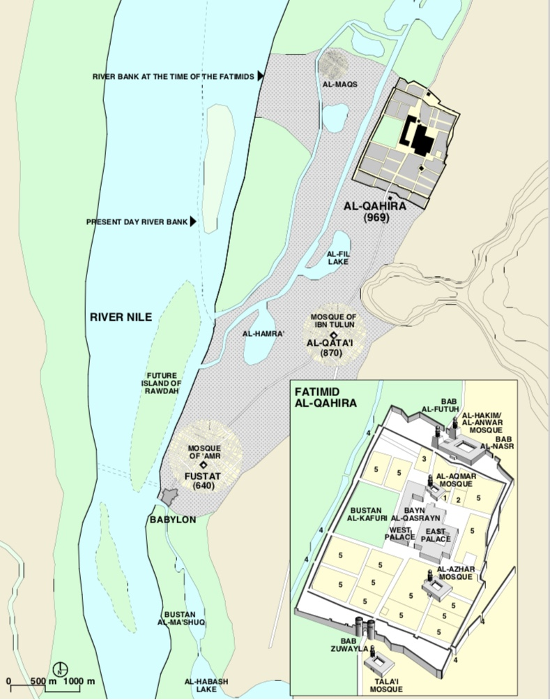
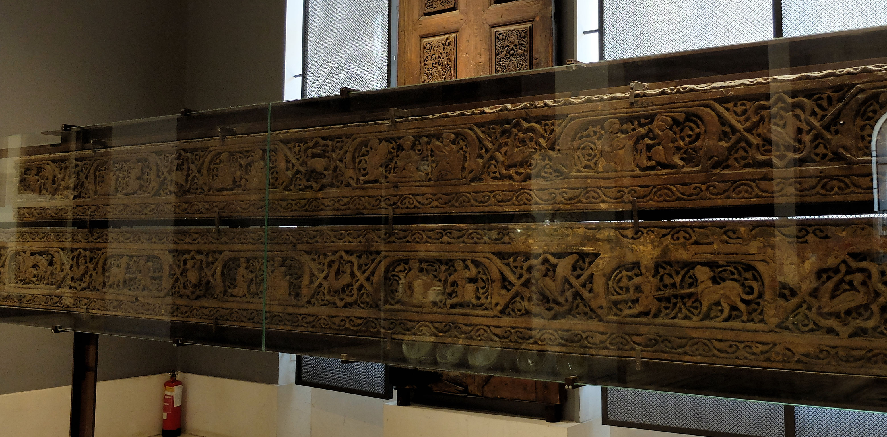
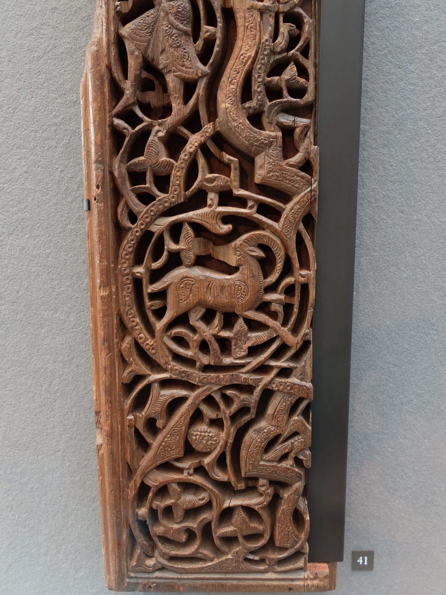
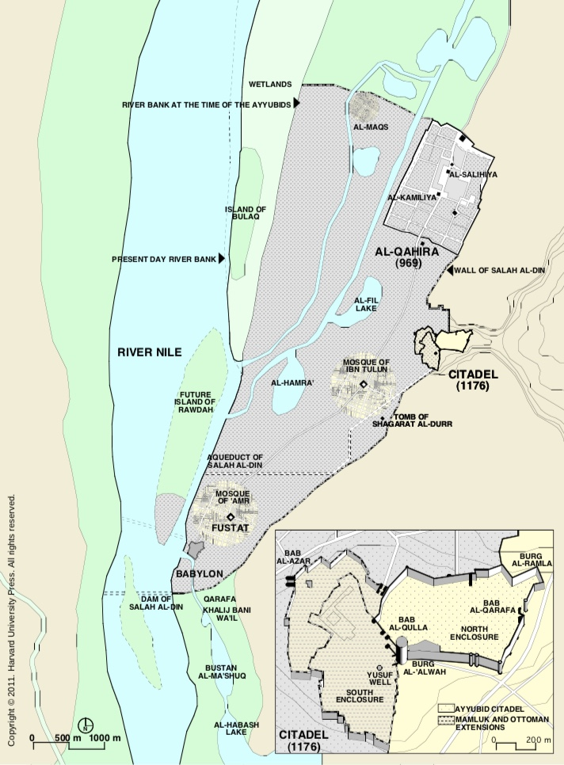

The Fatimid Palace
|
In 696, the Fatimid general Jahwar established a walled settlement north-east of the previously occupied areas, which he called Al-Qahira (Cairo). It contained a palace, a central square, gardens, and a mosque (now called the al-Azhar mosque). In 973 the caliph, al-Mu'izz, moved his court from its earlier capital, al-Mahdiyah in Tunisia, to the new city, and al-Qahira became the center of the royal court and the government, a status it enjoyed for two centuries. After the death of the last Fatimid caliph in 1171, the Fatimid palaces were given to his successor Saladin's followers; parts of them housed schools and a hospital, and eventually, most traces of the original buildings vanished. We can only reconstruct the palaces from the many descriptions of them that survive. Al-Mu'izz wanted to construct a caliphal residence to rival the palaces of other great rulers. The center of Sunni Islam was the caliphal court at Baghdad, and a rival Sunni ruler, descended from the Umayyad dynasty, ruled Spain from a palace at Cordoba. The palace of the Byzantine emperors in Constantinople was also fully in use in this period. So, there were plenty of models for the Cairo palaces. According to a writer named al-Maqrizi, who described Cairo around the year 1400, al-Qahira was planned so that 40% would be the palace and the great garden to its west (Bustan al-Kafuri), with the remainder allotted to the members of the Fatimid army. Al-Maqrizi describes the palace in great detail, and tells us that it had several large halls and courtyards. Through the "Golden Gate" (Dar al-Dhahab) it opened onto the large plaza, or maydan, which could be used for reviewing troops - it measured around 100 x 250 m, and apparently could hold 10,000 soliders. When a second set of palace structures was built in the 980s, on the west side of the maydan, the original palace became known as the Eastern palace. The palace was separated from the rest of al-Qahira by gardens and open spaces, and the Bustan al-Kafuri garden was originally restricted to the caliphal family (tunnels connected the garden with the Eastern Palace). The public spaces and gates were where the caliph presented himself to his people, while the private quarters were where his family lived. The descriptions speak of glittering ornaments of gold, jewels, and crystal, but all that survives are a few pieces of elaborately carved wood (right), with what seem to be scenes of enthroned rulers (despite a Muslim ban on pictures). Fatimid Shi'ite caliphs were religious as well as political leaders, and thus the palace had many religious functions. Processions made by the caliph on holidays started at the various gates of the palace. There were prayer halls and shrines inside the palace, and in the 1120s the vizier al-Ma'mun built the al-Aqmar Mosque, which still stands today, at the northwestern edge of the palace. In addition, the caliphs were buried in a mausoleum located on the south side of the palace (destroyed in the 14th century). The palace also contained an important library, and schools. |
 Carved wooden beams, probably from the Fatimid Eastern Palace, now in the Museum of Islamic Art in Cairo  |
|
Originally, al-Qahira was the city of the caliphal court, and throughout the Fatimid period it remained the city of the elite. The entire city was provided with water from the Nile via aqueducts. All around the caliphal palace were residences of high government officials, notably of the vizier ("prime minister"). |
Carved wooden panel, probably part of a door, from Fatimid Cairo, now in the Louvre Museum  |
|
The successor to the Fatimid dynasty, Salah al-Din (Saladin) built a new fortress/citadel to the southeast of al-Qahira, and the court and administration moved there in 1206, and remained there for the next 700 years. The citadel is built on a rock promontory that towers over the plain where Fustat and al-Qahira were; although it was therefore highly defensible, it actually never experienced a siege. Saladin's original palace, like the Fatimid palace, consisted of a halls, courtyards, and shrines, and the complex included a mosque, a library, various public halls, and a maydan complex. The citadel was provided with water from the Nile via an aqueduct. The original palace was greatly rebuilt in the 13th and 19th centuries, and so nothing remains of it. |
 |
*Much of this information, including the maps of the city, were taken from Nezar AlSayyad, Cairo: Histories of a City (Cambridge, MA: Harvard University Press, 2011).